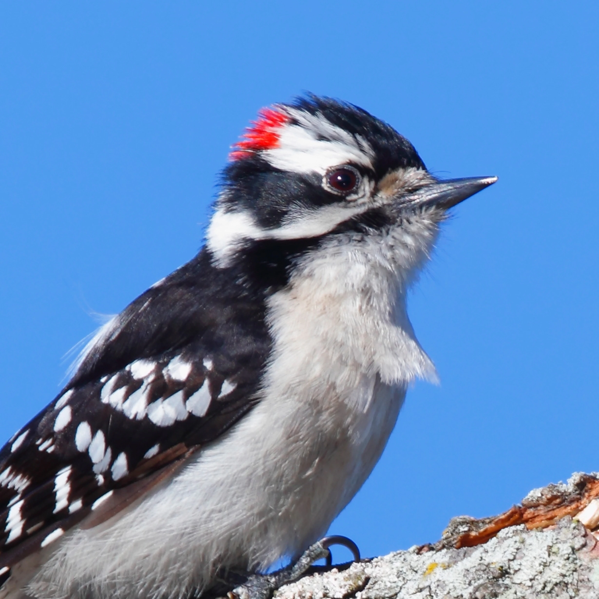
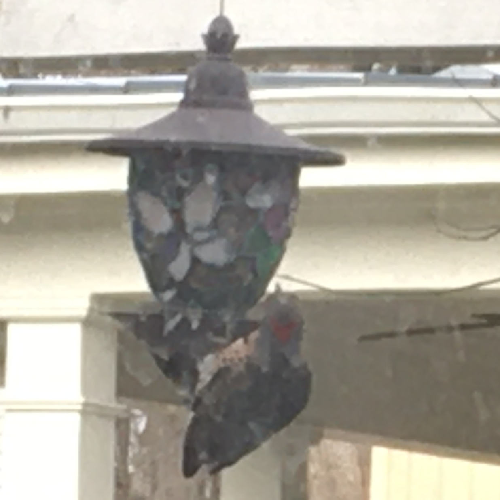

Black and White Birds
Downey Woodpecker

Size:
6"
Diet:
Seeds, insects, suet
Notes:
The least flashy woodpecker, but still a welcome sight. Hard to tell apart from hairy woodpecker except for size. Males have a red dot on the backs of their heads. Some wood peckers have been pecking on my house lately!
Red-Bellied Woodpecker

Size:
9"
Diet:
Seeds, insects, suet, nuts
Notes:
See that woodpecker with the red head? Do you know what we should call it? The Red-Bellied Woodpecker! (In fairness, the name Red-headed Woodpecker was already taken by a woodpecker with all red head.